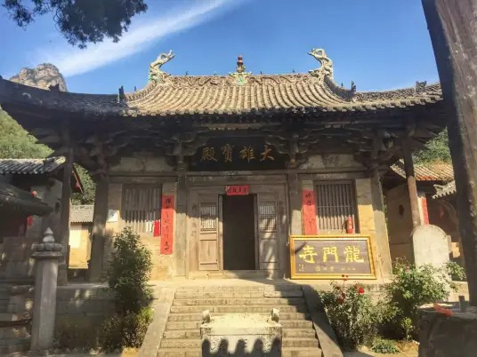

龙门寺 |
返回主页 |  | |
| 龙门寺（Longmen Temple），初名法华寺，又名惠日院，位于山西省长治市平顺县石城镇源头村北约1.5千米的山坳里，始创建于北齐文宣帝天保元年（公元550年），占地面积5070平方米。 龙门寺坐北朝南，东西宽65米，南北长78米，布局分三条轴线布置。中轴线布置了三进院落，每进院落均设有东西配殿，院落随地形建造，形成渐次叠高的形念。中轴线采用对称式布局，显示了中轴线建筑在寺院中的尊崇地位、西轴线南前后两进院落的僧舍和库院等附属建筑组成，东轴线则南圣僧堂、水陆殿及禅堂、僧舍同合成的院落组成，东西轴线上的建筑均南前院、中院和后院部分组成，两轴线的建筑多为明末清初所建。龙门寺集五代、宋、金、元、明、清建筑集于一处，是河谷内历史最悠久、现存文物建筑最多、跨度时间最长、石刻史料最丰富的寺院。 1996年11月20日，龙门寺被中华人民共和国国务院公布为第四批全国重点文物保护单位。 |
|||